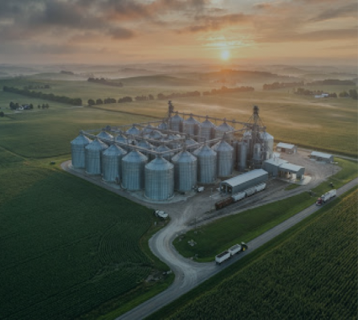

Nascemos para resolver um problema crítico e silencioso no agronegócio: a ausência de dados em tempo real sobre a capacidade e condição dos silos de grãos. Fundada por especialistas em automação industrial, engenharia agrícola e sistemas embarcados, a GrainTech substitui medições empíricas e riscos de superlotação por inteligência analítica contínua.
Nossa arquitetura conecta sensores ultrassônicos industriais a plataformas em nuvem ágeis, entregando às cooperativas e armazenadoras total controle volumétrico, rastreabilidade e prevenção ativa contra perdas de safra.

Reduzir perdas na armazenagem de grãos com sensores IoT, dados em tempo real e gestão preventiva.
Inteligência e automação no monitoramento de grãos para garantir máxima rentabilidade e sustentabilidade.
Impulsionamos o campo com inovação e dados confiáveis, entregando ao produtor soluções simples, intuitivas e acessíveis.
Solução completa de monitoramento para cooperativas e armazenadoras brasileiras: precisão, simplicidade e baixo custo.
O monitoramento IoT da GrainTech evita perdas na safra, reduz emissões e elimina o risco humano na medição manual de silos.
Engenheiros e especialistas apaixonados por transformar a infraestrutura de pós-colheita do agronegócio nacional.